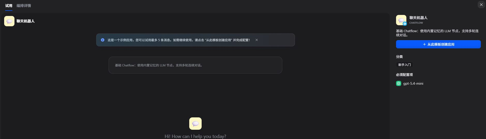

P25-dify-o1 · 官方机制
应用可复制/导入DSL，但知识内容和第三方授权须由使用团队另行准备。
最后修改2026-07-29 · 观察：2026-09-09
复用既有2026-09-09正文；未导入或调用。
Dify 提供应用编排、知识检索、插件连接与维护入口。公开记录包括知识导入、工作流和文件生成，也出现节点或模型运行成功但最终结果不可用的情况。插件作者、应用维护者、终端用户和采购者承担不同角色；问题帖不足以确定企业规模或业务收益。
| 内容使用者 | 内容供给者 | 付款方 |
|---|---|---|
| 搭建和运行知识/工作流应用的人；终端业务用户未必访问Dify本身。 | 应用维护者、插件贡献者与提供集成的外部服务商。 | Cloud工作区或企业计划的官方买方；有Cloud与自托管自述，没有付款核验。 |
3位不同公开提交者：知识检索、索引自动化、生成文件交付；团队大小与职位未知。 · 有用户线索，候选画像
| 观察点 | 群体占比 |
|---|---|
| 3个可区分用户点 | 未知 |
| 问题 | 具体材料 |
|---|---|
| 任务 | 把文档导入知识库，接入模型和工具，并向实际使用者交付答案或文件。 |
| 触发 | 内部资料要能问答，或重复任务要接成应用。 |
| 希望取得的结果 | 相同输入能在测试和应用中得到一致结果，失败后可恢复。 |
| 困难 | 检索测试有结果，工作流却返回空。；索引失败后外部自动化缺少合适的重试路径。；工具已生成文件，聊天和日志仍未显示。 |
| 需要的内容 | 可导入配置、依赖与授权清单、预期结果和错误恢复说明。 |
| 替代方法 | 直接调用模型/检索服务、自写流程或选其他编排工具；暂无明确迁移样本。 |
| 持续使用记录 | 匿名A自述生产部署中发现图片交付问题并有候选修复；其运行验证尚非上游修复或终端买方验收。 |
| 回访假设 | 应用继续处理新文档和输入，维护需求随之发生。 |
| 付费记录 | 匿名C使用Cloud不代表其是付费计划；自托管也可能仅承担外部资源费用。 |
3位不同提交者，含p1匿名A，人数不可相加；1位报告注明AI辅助及人工审阅。 · 有用户线索，候选画像
| 观察点 | 群体占比 |
|---|---|
| 3个可区分用户点 | 未知 |
| 问题 | 具体材料 |
|---|---|
| 任务 | 把具体失败转成可复现材料，修改、验证并考虑贡献给上游。 |
| 触发 | 新Agent、模型兼容或人工审批流程出现差异。 |
| 希望取得的结果 | 团队已有流程继续运转，更新不破坏交付。 |
| 困难 | 不同应用形态对同一插件输出处理不同。；模型可调用却被界面标成不兼容。；并行表单提交与顺序提交的结果不一致。 |
| 需要的内容 | 精确版本、最小DSL、对照实验、迁移说明和维护范围。 |
| 替代方法 | 在自有部署打补丁、调整流程或等待上游；明确有候选补丁。 |
| 持续使用记录 | 匿名A提出带验证的修复；匿名D给出顺序成功/并行受阻对照；尚未核上游合并与用户回访。 |
| 回访假设 | 已有应用和插件依赖上游，因此更新与反馈不断产生。 |
| 付费记录 | 维护者收入、支持合同及企业订阅未知。 |
1位外部服务方在公开issue自述希望集成；不是普通买方。 · 有供应商自述，候选画像
| 观察点 | 群体占比 |
|---|---|
| 1个可区分用户点 | 未知 |
| 问题 | 具体材料 |
|---|---|
| 任务 | 把自有能力接入Dify，使应用团队能够选用。 |
| 触发 | 发现平台缺少或可增强的连接能力。 |
| 希望取得的结果 | 得到明确扩展点，并通过集成获得使用机会。 |
| 困难 | 技术提案与商业合作需要分清。；发布或提出分成不代表平台接受，更不代表用户采用。 |
| 需要的内容 | 插件边界、审核条件、维护要求和商业披露。 |
| 替代方法 | 自建插件、其他生态分发或直接服务客户。 |
| 持续使用记录 | 只有提案，未读到获准集成、付款或实际终端使用。 |
| 回访假设 | 集成被采用并产生真实使用时可能持续维护。 |
| 付费记录 | 提案中的收入安排是供应商单方提议；不计Dify成交或现行分成制度。 |
| 产品提供 | 内容形态 | 如何发挥作用 | 观察结果 | 剩余工作 |
|---|---|---|---|---|
| 知识库导入、检索测试和工作流检索节点。 | 知识内容、检索配置与应用流程。 | 将资料处理结果接入问答或工作流。 | 匿名C报告同一查询在检索测试有匹配、工作流为空；产品路径存在，最终应用结果受阻。 | 正确检索、回答质量和业务验收未完成核实。 |
局部测试成功/应用受阻
| 产品提供 | 内容形态 | 如何发挥作用 | 观察结果 | 剩余工作 |
|---|---|---|---|---|
| 插件调用与聊天/日志交付结构。 | 生成文件、消息附件、日志。 | 应用应将工具产物保存并以可访问附件交给人。 | 匿名A称Chatflow同工具可用，Agent路径未交付；自有候选修复已验证，未核上游。 | 作者修复不等于所有Dify实例已修复；终端使用者满意度未知。 |
用户自述局部修复
| 产品提供 | 内容形态 | 如何发挥作用 | 观察结果 | 剩余工作 |
|---|---|---|---|---|
| API、运行状态、流程配置与公开问题区。 | 索引状态、最小DSL和失败对照。 | 让应用维护者定位恢复点并提改进。 | 索引重试目前是请求；审批样本有顺序提交成功的自述对照。 | 稳定运行和失败恢复不是仅靠拖节点完成。 |
定位与改进提案
| 产品提供 | 内容形态 | 如何发挥作用 | 观察结果 | 剩余工作 |
|---|---|---|---|---|
| 插件市场与贡献/伙伴入口。 | 插件、配置说明、公开源与验证材料。 | 作者完成打包与审查后才进入分发。 | 本例只到主动提出合作；并未确认插件交付或采用。 | 合并、安装成功、真正使用和收入均未核。 |
供应商提案
应用可复制/导入DSL，但知识内容和第三方授权须由使用团队另行准备。
最后修改2026-07-29 · 观察：2026-09-09
复用既有2026-09-09正文；未导入或调用。
插件贡献指南要求包、公开源码与验证材料，自动检查后仍需维护者审核。
最后修改2026-09-09 · 观察：2026-09-09
提交规则不是实际获批与运行记录。
伙伴计划覆盖转售、服务与市场合作角色。
未标注（动态页面） · 观察：2026-09-09
目录和机会不证明实际伙伴收入。
Cloud和企业产品分开承接工作区、协作与管理能力。
动态价格页 · 观察：2026-09-09
不刷新报价，不将官方客户口径当独立采购访谈。
匿名A在自托管部署中报告：图像工具已生成，同工具在Chatflow可用，Agent却将文件变成文本且不显示附件；作者有候选修复并称验证通过。
2026-09-10 · 观察：2026-09-10
作者部署及修复自述；未复现，未认定上游已合并或买方验收。
匿名B自述通过Knowledge Service API上传文档并轮询索引，希望失败后不重传且保留原标识地重试。
2026-09-10 · 观察：2026-09-10
读到实际整合场景与提案，未确认提案实现。
匿名C在Cloud以相同查询对照：检索测试有匹配，工作流节点成功但结果为空，尝试调整检索配置仍无结果。
2026-09-09 · 观察：2026-09-10
自述工作区所有者是产品权限，不等于企业采购决策者；未复现。
匿名D报告两个人工输入并行提交可能使流程暂停，而顺序提交成功，并提供版本与复现DSL。
2026-09-10 · 观察：2026-09-10
作者注明AI辅助及本人审阅；属特定自托管检出版本复现，不是普通买方业务成功。
匿名E检查自定义模型在Agent V2界面被标不兼容的判断，并区分技术能力与推荐资格。
2026-09-10 · 观察：2026-09-10
属于检查与改进提案；不把被引用的他人故障再计一个用户。
匿名F明确以外部记忆服务提供方身份提出集成及商业合作，希望找到扩展点。
2026-09-09 · 观察：2026-09-10
供应商线索，不是独立买方需求；不转存姓名与联系方式，不将提议当现行规则。
Dify · 最后修改2026-07-29 · 查阅：2026-09-09
读取既有研究证据；原访问2026-09-09，未重新操作。复用既有2026-09-09正文；未导入或调用。
Dify · 最后修改2026-09-09 · 查阅：2026-09-09
读取既有研究证据；原访问2026-09-09，未重新操作。提交规则不是实际获批与运行记录。
Dify · 未标注（动态页面） · 查阅：2026-09-09
读取既有研究证据；原访问2026-09-09，未重新操作。目录和机会不证明实际伙伴收入。
Dify · 动态价格页 · 查阅：2026-09-09
读取既有研究证据；原访问2026-09-09，未重新操作。不刷新报价，不将官方客户口径当独立采购访谈。
公开议题参与者（匿名） · 2026-09-10 · 查阅：2026-09-10
2026-09-10实际访问层级：正文已读。作者部署及修复自述；未复现，未认定上游已合并或买方验收。
公开议题参与者（匿名） · 2026-09-10 · 查阅：2026-09-10
2026-09-10实际访问层级：正文已读。读到实际整合场景与提案，未确认提案实现。
公开议题参与者（匿名） · 2026-09-09 · 查阅：2026-09-10
2026-09-10实际访问层级：正文已读。自述工作区所有者是产品权限，不等于企业采购决策者；未复现。
公开议题参与者（匿名） · 2026-09-10 · 查阅：2026-09-10
2026-09-10实际访问层级：正文已读。作者注明AI辅助及本人审阅；属特定自托管检出版本复现，不是普通买方业务成功。
公开议题参与者（匿名） · 2026-09-10 · 查阅：2026-09-10
2026-09-10实际访问层级：正文已读。属于检查与改进提案；不把被引用的他人故障再计一个用户。
公开供应方（匿名） · 2026-09-09 · 查阅：2026-09-10
2026-09-10实际访问层级：正文已读。供应商线索，不是独立买方需求；不转存姓名与联系方式，不将提议当现行规则。
Dify教程讲解搭建过程，模板传递应用结构，插件增加工具能力。运行日志属于应用维护记录。复制模板时仍需补齐未随配置提供的数据、服务和权限。
围绕一个任务解释节点、变量和测试过程。
| 样例 | 可以取得什么 | 后续动作 | 条件与限制 |
|---|---|---|---|
| 官方多平台内容生成器快速入门。 | 过程教学，带具体配置说明；未运行。 | 按教程搭建并测试自己的应用。 | 示例输出与模型选择、输入有关；文案中的效率承诺未验证。 |
应用配置加上用途介绍和使用准备。
| 样例 | 可以取得什么 | 后续动作 | 条件与限制 |
|---|---|---|---|
| Creator Center 的应用模板投稿要求。 | 可导入配置及说明，不能等同完整业务系统。 | 选择模板后准备数据、依赖和授权；未实测导入。 | 逻辑变更需另建条目；旧副本怎样迁移需另行处理。 |
一份可安装包及与其一致的源码和说明。
| 样例 | 可以取得什么 | 后续动作 | 条件与限制 |
|---|---|---|---|
| 当前 Marketplace 插件投稿指南。 | 可执行扩展；审核材料与宣传介绍分开。 | 按权限安装并配置所需服务；未安装。 | 包可安装不代表外部服务免费，也不证明任何输入均可安全处理。 |
应用的一次会话或工作流运行记录。
| 样例 | 可以取得什么 | 后续动作 | 条件与限制 |
|---|---|---|---|
| 应用管理的 Logs 页。 | 排查资料，通常在工作区内，不是公共内容流。 | 维护者可根据节点和输入定位问题。 | 测试记录的收录因应用类型不同；不可将全部记录直接视为外部真实用户。 |
2026-07-29 更新的教学示例；没有执行生成，不当作真实客户采用案例。
| 材料部分 | 观察到什么 | 作用分析 |
|---|---|---|
| 任务输入 | 输入包含原稿、可选附件、语气、目标平台和语言。 | 分析：把抽象生成需求拆成使用者能准备的条件。 |
| 输入整理与分流 | 先提取平台，再校验；图片和文档分别处理后汇总资料。 | 分析：内容不只有提示词，还说明不同材料怎样进入处理过程。 |
| 按平台生成 | 迭代环节逐个平台处理，并返回平台名和正文的结构化结果。 | 分析：一次输入对应多个输出，模板应说明两者的对应关系。 |
| 输出与检查 | 模板节点整理结果，教程给出测试入口和节点日志排查说明。 | 分析：使用者能检查任务是否跑完，但仍须判断生成内容是否准确和适用。 |
官方示例不代表平台用户持续采用，也不证明生成内容可直接发布。
| 可取得或继承 | 还需准备 | 不能直接迁移 |
|---|---|---|
| DSL 可带应用配置、节点、模型参数、提示词及知识库连接；应用副本独立保存。 | 接收方仍需自己的知识库数据、外部授权和可用依赖，并检查导入版本。 | 第三方 API 密钥、知识库内容及日志不随 DSL 导出；Secret 类型环境变量在导出时可以选择是否包含，不能笼统称所有秘密都自动移除。 |
Dify模板作者提供使用说明，插件作者交付可审查的运行包，应用团队处理自己的数据和运行问题。导入后的任务完成情况与作者收入仍缺数据。
模板指南要求先成功运行，并使用市场插件；概要与设置步骤分开填写。
| 执行与分工 | 触发与节奏 | 运营作用（分析） | 失效条件 |
|---|---|---|---|
| 作者整理配置与说明，平台审核上架。 | 在提交模板前完成；未核审核等待时间。 | 分析：把用途判断与安装准备分开，便于使用者决定是否继续。 | 作者运行成功不代表陌生环境成功，使用次数也没有明确等同成功运行。 |
当前指南要求安装包、公开源码与验证材料；自动检查通过后仍需维护者审核。
| 执行与分工 | 触发与节奏 | 运营作用（分析） | 失效条件 |
|---|---|---|---|
| 作者准备并修正材料，自动检查筛错误，维护者判断能否批准。 | 提交、推送更新或从草稿转为待审时触发检查。 | 分析：可执行能力的质量管理需要代码与运行证据，不能只审核介绍文案。 | 检查通过不是对全部使用环境的可靠性承诺。 |
应用复制产生独立副本；DSL 可带配置与知识库连接，不包含知识库内容或第三方 API 密钥。
| 执行与分工 | 触发与节奏 | 运营作用（分析） | 失效条件 |
|---|---|---|---|
| 原作者交付结构，使用团队配置自己的依赖和资源。 | 复制或导入时触发适配。 | 分析：需要明确交付止于哪里，避免把配置问题误认为案例无用。 | 版本不一致可能出现导入警告；没有执行导入。 |
作者中心呈现市场反馈；应用日志另记录运行情况，并区分终端用户反馈与运营评分。
| 执行与分工 | 触发与节奏 | 运营作用（分析） | 失效条件 |
|---|---|---|---|
| 模板或插件作者看市场反馈，应用团队查看自己工作区的运行问题。 | 新反馈或失败运行触发检查，响应时限未知。 | 分析：模板问题、外部依赖问题与实际业务输入问题需要不同维护者。 | 这些管理能力不是公开社区活跃数据，也不证明作者实际处理。 |
模板内部逻辑变化需另建条目；插件规则要求维护、弃用说明，长期失维护可能受限。
| 执行与分工 | 触发与节奏 | 运营作用（分析） | 失效条件 |
|---|---|---|---|
| 作者解释变化与迁移，使用团队决定何时更新。 | 逻辑变化、破坏性更新或停止维护时触发。 | 分析：内容被复制后，维护责任不会自动随发布结束。 | 未验证已有副本的迁移效果，不能承诺自动同步。 |
2026-09-09 更新的官方指南，是规则机制实例，未提交插件或旁观一条实际获批记录。
分析：平台要维护规则、处理例外并核对材料一致性；作者需要持续响应，不能把提交当作完成交付。
未核审核耗时、通过率、恶意或缺陷插件漏检情况。
| 供给者回报 | 参与者回报 | 与付费的连接 |
|---|---|---|
| 市场提供分发与作者反馈入口；规则显示市场仅接受免费插件，不证明作者取得销售分成。 | 应用团队可以减少重复编排，并保留自己的应用版本。 | Cloud 工作区按计划承接容量需求，外部模型或服务费用另算；不更新价格和转化。 |
| 持续工作 | 尚未量化的成本 | 成立条件 |
|---|---|---|
| 补设置说明、验证依赖、处理反馈、解释版本变化和失维护情况。 | 分析：一份模板可能被不同团队连接到不同资料和服务，作者难以完全复现每个使用环境。 | 内容作者愿意维护，使用团队能处理自己的配置，平台提供可追溯版本与反馈。 |
Dify通过Cloud订阅、企业能力与服务伙伴承接应用运行及管理需求，代码、试用和插件提供使用入口。模板浏览、业务采用和持续采购应分别观察。
| 付款方 | 收入方式 |
|---|---|
| 个人开发者、小团队的工作区负责人，以及采购私有部署、管理、安全和支持能力的企业。最终使用生成应用的员工或客户，往往不是向 Dify 付费的人。 | Cloud 工作区订阅、企业授权与支持，伙伴通过转售和服务获得收入；插件目录不等于已成熟的付费交易市场。 |
事实：Cloud 的 Professional 标价每工作区每月 59 美元、年付 590 美元；Team 为每月 159 美元、年付 1,590 美元，均未含适用税。免费 Sandbox 用于试验，收费层增加协作与资源。判断：收费触发主要是项目持续使用后，团队和容量超出试用边界，而不是第一次发现一个模板。
事实：官方说明内含消息额度可用于体验模型，用完后可使用自己的模型 API 凭证。判断：Dify 卖的是工作流构建和运行环境，并不必然取得所有模型调用收入。多元拾光的 API 业务与 MakeNow 也需要分别核算，才能知道用户是在购买便宜模型，还是购买制作效率。
事实：企业方案提供私有部署、多工作区、SSO、支持等能力，并以合同询价。代码许可证允许部分商业使用，但对多租户及前端标识修改设有额外条件，不能简单说社区版只准非商业使用。判断：这些边界把免费采用与更复杂的商业部署分开，具体适用需按实际部署和合同判断。
事实：伙伴计划允许转售企业方案，并由服务伙伴对技术服务、培训及相关产品自行定价。判断：行业实施不必全部由平台自身完成；服务商有机会赚交付收入。该收入不全属于 Dify，也没有公开统一抽成率。
事实：Cloud 对照表将 Marketplace 标为当前免费，伙伴页同时说明插件和工具有商业化机会。判断：供给者的获客、服务销售与平台直接收取市场佣金不是同一模式。未查到足以验证整体交易额、抽成收入及作者收益的数据。
| 指标 | 披露值 | 期间与对象 | 解释 | 限制 |
|---|---|---|---|---|
| 运行机器数量 | 超过 140 万台 | 2026-03-10 创始人公告；全球部署机器 | 说明部署传播范围。 | 机器数不是独立用户；重复部署、测试环境和活跃状态未说明，不能视为 MAU 或企业客户。 |
| 团队与企业采用 | 超过 2,000 个团队、280 家企业 | 2026-03-10 创始人公告；公告所述在 Dify 上构建解决方案的组织 | 可作为组织采用的公开信号。 | 原文未明确这些均为付费客户，团队与企业是否重叠亦未说明；不相加，不乘套餐价估收入。 |
| 融资规模 | 3,000 万美元 Pre-A 轮 | 2026-03-10 公告；Dify 公司融资 | 反映用于产品与企业采用建设的外部资本支持。 | 融资不是营收或盈利，不能用来证明订阅模式已达到某个利润水平。 |
| 年度经常性收入与付费留存 | 未公开核实 | 截至 2026-09-09；Cloud、Enterprise 与生态收入分项 | 收费路径清楚，销售结果仍有资料缺口。 | 价格、部署量、GitHub 星标和融资不能替代收款与续费数据。 |
| 官方自述企业客户 | 280+ | 2026-09-09读取；About未标统计截止；Dify About的Enterprise customers | 公司以企业客户描述该覆盖范围，较一般团队采用更接近商业客户线索。 | 有效付费合同、去重、续约和收款定义未披露；不能与历史团队数相加，不能据此推算ARR。 |
Dify · 动态价格页 · 查阅：2026-09-09
区分月付与年付、工作区而非每席计价；Marketplace 当前免费。
Dify · 动态价格页 · 查阅：2026-09-09
Enterprise 管理能力、社区部署与消息额度边界。
LangGenius · 持续维护，文件版权 2025 · 查阅：2026-09-09
可商业使用但存在额外条件，不表述为纯 Apache 2.0 或禁止全部商用。
Dify · 未标注（动态页面） · 查阅：2026-09-09
转售、服务与市场伙伴；机会不等于交易额。
Dify / 创始人 Luyu Zhang · 2026-03-10 · 查阅：2026-09-09
机器数、采用团队与企业口径；未明确全部为付费客户。
Dify · 未标统计截止；2026-09-09读取 · 查阅：2026-09-09
280+ Enterprise customers、1.4M+ machines。官方商业自述，未审计；与历史融资稿不能拼接精确增长。
已登录，检查基础聊天模板和复杂研究模板的预览、配置与创建条件；未创建应用、发送消息、授权插件或配置 API 凭据。

基础聊天模板示例标示最多 5 条试用消息，右侧列出必须配置的模型；可以查看编排详情。
没有发送消息。看到试用说明，不代表已经试用或自己创建的应用开箱即用。
来源页面 ↗登录后只读检查模板预览与创建前条件；不是图片生成测试。
明确区分看模板、试用示例、创建自己的应用和完成配置；只完成前者的界面核验。
已接收生成任务0次。只读查看；未创建、发送、授权或消耗资源。
| 阶段 | 用户动作 | 可能遇到的障碍 |
|---|---|---|
| 发现与进入 | 从一个明确用途的模板或作者教程进入。 | 标题说得太宽，用户会导入不适合的流程。 |
| 第一次做成 | 看结构与 Setup，导入后配置模型、工具和数据，再运行自己的输入。 | 缺少账号、依赖或配置，导入成功也不能直接使用。 |
| 再次使用 | 处理下一份材料，并根据实际反馈修订。 | 编辑器试跑和正式使用是两种记录。 |
| 贡献给别人 | 发布模板，回应问题，再提交修订。 | 新版本不等于自动更新每个用户已导入的副本。 |
同一预览窗把示例体验、编排详情和必须配置项放在一起。基础聊天示例与复杂研究模板的可试程度不同；社区可以降低发现方法的成本，不能替使用者补齐模型与外部服务。
模板详情的结构预览帮助判断流程，Setup steps 说明还要准备什么，Open in Dify 才是接手动作。兼容版本和更新日期能帮助用户判断风险。
构建者的日志与节点排错页属于生产工具。社区案例消费页应先解释用途、输入和限制，不需要直接把所有诊断字段摆给新手。
3 月 Creator Center 介绍时，Studio 直接发布仍属于后续计划；5 月正式公告已经说明可从 Studio 发布到 Marketplace。模板详情提供结构预览、作者和导入入口，目标是降低空白画布与手工讲解成本。
这说明分享应接在真实工作流之后。但导入成功不等于任务成功，用户还需要自己的数据与模型服务。
作者可以通过模板和作品集获得曝光与机会，并选择绑定 Affiliate，在引荐用户订阅时获得佣金。这不是按下载或每次运行自动付给所有模板作者的收益。
插件是另一种供给对象。规则要求独特功能、端到端可用、完整配置文档和持续支持；现行协议仍限定免费插件，插件调用外部付费服务可以另有费用。
官方插件规则反对重复换皮和无意义更新；作者应提供支持、修复问题，失联可能导致限制安装或下架。复制模板的 DSL 也不带第三方凭证、知识库内容和使用日志。
这直接反证“有复制按钮便没有上手成本”。多元拾光的分享设计应让用户知道缺失项，也应考虑作者维护：方法何时失效、谁来修、旧版本如何说明。
2023 年官方开源公告回溯 Cloud 先上线，核心已经包含可视化提示、上下文数据、应用发布与日志改进。它先提供构建工具，再借开源发展参与者。
当时自报的应用数量不用于证明当前社区规模。当前开源许可也不能沿用最早公告的文字，故本报告不据历史许可提出商业复制建议。
真实应用运行、效果问题、外部 API 变化和用户需求会带来复访；这首先是工具和维护价值。论坛、模板和作者关系是否增加留存，仍缺公开分群数据。
多元拾光可以在 API 方向做“具体应用、成本和失败复盘”，在 MakeNow 方向做“任务案例与接手方法”。两者有不同人群，先用真实需求验证，不必一起建大市场。
当前发布文档要求模板先运行、配置说明可执行，再提交审核。流程内部的提示、工具或模型设置改变，需要作为新模板提交；仅修改介绍与安装步骤，也涉及下架和重新审核。不能假设导入副本始终跟随作者最新版本。
Logs 文档把真实用户反馈与团队评价分列，并说明部分编辑器测试不进入正式日志。它提供了区分调试和实际使用的设计参照；没有取得任何应用的真实使用日志。
| 做法 | 依据 | 投入 | 调整条件 |
|---|---|---|---|
| 产品写最低结果标准，作者提供步骤与素材要求，运营观察新用户用自己的输入重建。 | 人工交接可以找到方法本身的问题，帮助判断复制功能应携带哪些内容。 | 逐项记下配置、解释、返工和作者支援；这部分人工成本不能算成未来复制体验的结果。 | 多次交接都卡在相同重建步骤，才提高自动复制优先级；配置顺利却结果无用，应先改任务。 |
| 做法 | 依据 | 投入 | 调整条件 |
|---|---|---|---|
| 运营维护可用、需更新和暂不可用的案例记录，产品决定何时重新验收。 | 模板开放以后，模型变更和外部依赖会不断带来维护；交易系统解决不了这些问题。 | 精选案例数量有限，但用户更容易判断它今天是否还能用。 | 有稳定作者持续维护、真实用户反复采用，再讨论更开放的分发与交易。 |
官方 · 2026-05-19
正式发布、结构预览与 Studio 发布
官方 · 2026-03-10
作者主页、引荐佣金及当时计划状态
官方 · 更新 2026-07-29
复制、DSL 与不携带的内容
官方 · 未标更新日
独特性、质量与作者维护
官方 · 访问 2026-09-08
Cloud、自部署与 Enterprise 边界
官方 · 2023-05-15
早期工具与开发者参与；不采用旧许可为现状
官方 · 更新 2025-06-09
免费插件与外部付费披露
官方 · 更新 2026-07-02
预先运行、审核与模板更新方式
官方 · 更新 2026-08-07
编辑器测试边界、用户反馈与团队评价
平台作者 · 更新 2026-06-18
公开作者模板；兼容版本与安装步骤，不代表官方质量保证